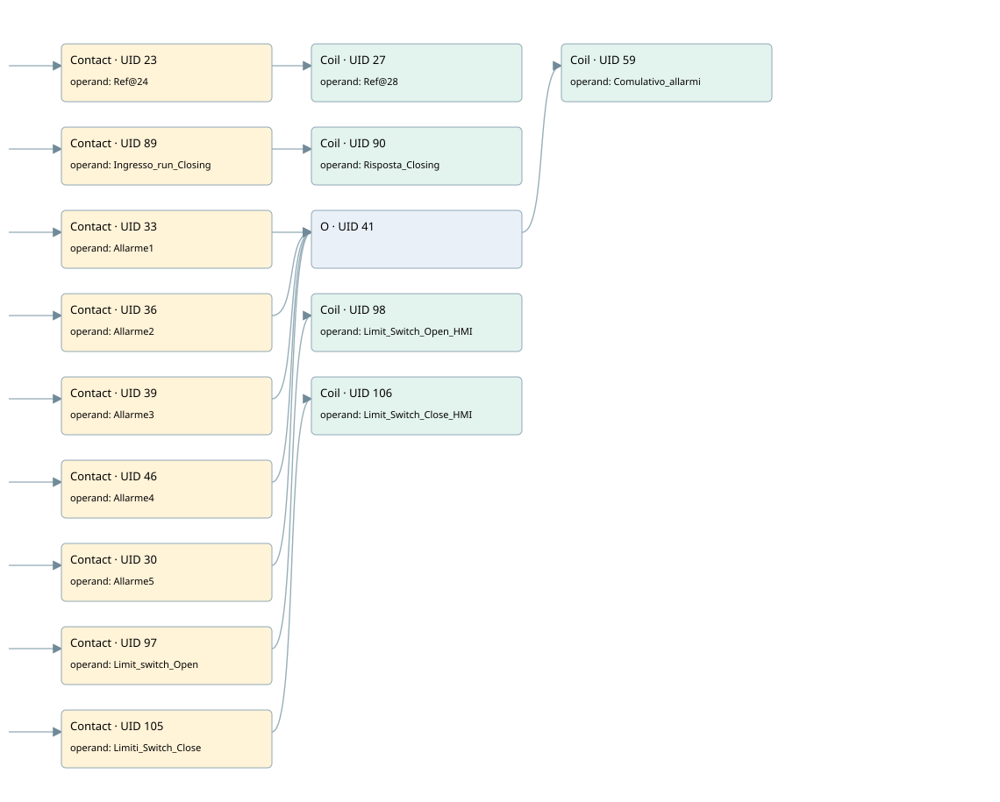

hmi standard motorized valve
hmi standard motorized valve · 검색 색인 순서 1 · 원본 내부 NID 추정 1
백업 PLF 원본의 2936805 바이트 위치에서 복원한 XML. 검색 문서 336의 객체 키 161022002816000000000000와 연결했다. 이름 해석 12/14개. 남은 RefId는 상수 또는 미해석 참조다.
연결 구조 다시 그리기
원본 Part/PCon/Wire를 이용한 연결도다. TIA 화면의 래더 배치 또는 실행 결과를 재현한 그림은 아니다. 핀 연결은 아래 표와 원본 XML을 기준으로 읽는다. 노드 위에 마우스를 두면 피연산자 이름을 볼 수 있다.

접점·코일·블록과 피연산자
| Part UID | Gate | Negated 핀 | 연결 피연산자 |
|---|---|---|---|
| 23 | Contact | operand = RefId 16 / ORef UID 24 | |
| 27 | Coil | operand = RefId 17 / ORef UID 28 | |
| 89 | Contact | operand = Ingresso_run_Closing | |
| 90 | Coil | operand = Risposta_Closing | |
| 33 | Contact | operand = Allarme1 | |
| 36 | Contact | operand = Allarme2 | |
| 39 | Contact | operand = Allarme3 | |
| 46 | Contact | operand = Allarme4 | |
| 30 | Contact | operand = Allarme5 | |
| 41 | O | ||
| 59 | Coil | operand = Comulativo_allarmi | |
| 97 | Contact | operand = Limit_switch_Open | |
| 98 | Coil | operand = Limit_Switch_Open_HMI | |
| 105 | Contact | operand = Limiti_Switch_Close | |
| 106 | Coil | operand = Limit_Switch_Close_HMI |
접점 경로를 펼친 조건식
Contact·O/A·비교기의 원본 연결을 읽기 쉽게 펼친 보조 해석이다. POWER는 전원 레일 시작을 뜻한다. 호출 블록·에지·타이머의 내부 동작과 다중 쓰기 순서는 이 표로 실행 검증하지 않았다. 미해석 핀과 RefId는 원문 연결표에서 확인한다.
| UID | 동작 | 대상 | 원본 접점 경로 | 내용 |
|---|---|---|---|---|
| 27 | Coil | ORef UID 28 | ORef UID 24 | 조건에 따른 Coil 기록 |
| 90 | Coil | Risposta_Closing | Ingresso_run_Closing | 조건에 따른 Coil 기록 |
| 59 | Coil | Comulativo_allarmi | (Allarme1 OR Allarme2 OR Allarme3 OR Allarme4 OR Allarme5) | 조건에 따른 Coil 기록 |
| 98 | Coil | Limit_Switch_Open_HMI | Limit_switch_Open | 조건에 따른 Coil 기록 |
| 106 | Coil | Limit_Switch_Close_HMI | Limiti_Switch_Close | 조건에 따른 Coil 기록 |
원본 배선 연결
| Wire UID | 동일 Wire 연결 끝점 |
|---|---|
| 21 | Powerrail {} ↔ Part 23.in ↔ Part 89.in ↔ Part 33.in ↔ Part 36.in ↔ Part 39.in ↔ Part 46.in ↔ Part 30.in ↔ Part 97.in ↔ Part 105.in |
| 22 | ORef 24 (RefId 16) ↔ Part 23.operand |
| 25 | Part 23.out ↔ Part 27.in |
| 26 | ORef 28 (RefId 17) ↔ Part 27.operand |
| 94 | ORef 91 (Ingresso_run_Closing) ↔ Part 89.operand |
| 95 | Part 89.out ↔ Part 90.in |
| 96 | ORef 92 (Risposta_Closing) ↔ Part 90.operand |
| 32 | ORef 34 (Allarme1) ↔ Part 33.operand |
| 42 | Part 33.out ↔ Part 41.in1 |
| 35 | ORef 37 (Allarme2) ↔ Part 36.operand |
| 43 | Part 36.out ↔ Part 41.in2 |
| 38 | ORef 40 (Allarme3) ↔ Part 39.operand |
| 44 | Part 39.out ↔ Part 41.in3 |
| 45 | ORef 47 (Allarme4) ↔ Part 46.operand |
| 48 | Part 46.out ↔ Part 41.in4 |
| 29 | ORef 31 (Allarme5) ↔ Part 30.operand |
| 49 | Part 30.out ↔ Part 41.in5 |
| 57 | Part 41.out ↔ Part 59.in |
| 58 | ORef 60 (Comulativo_allarmi) ↔ Part 59.operand |
| 102 | ORef 99 (Limit_switch_Open) ↔ Part 97.operand |
| 103 | Part 97.out ↔ Part 98.in |
| 104 | ORef 100 (Limit_Switch_Open_HMI) ↔ Part 98.operand |
| 110 | ORef 107 (Limiti_Switch_Close) ↔ Part 105.operand |
| 111 | Part 105.out ↔ Part 106.in |
| 112 | ORef 108 (Limit_Switch_Close_HMI) ↔ Part 106.operand |
식별자 해석 근거 14개
| ORef UID | RefId | 이름 | IdentXmlPart 파일 | 해석 방법 |
|---|---|---|---|---|
| 24 | 16 | 미해석 RefId | 식별 선언 원본 참조 | 미해석 |
| 28 | 17 | 미해석 RefId | 식별 선언 원본 참조 | 미해석 |
| 91 | 23 | Ingresso_run_Closing | 0622-IdentXmlPart.xml | UID/RID + search-text + NID agreement |
| 92 | 29 | Risposta_Closing | 0622-IdentXmlPart.xml | UID/RID + search-text + NID agreement |
| 34 | 18 | Allarme1 | 0621-IdentXmlPart.xml, 0622-IdentXmlPart.xml | UID/RID + search-text + NID agreement |
| 37 | 19 | Allarme2 | 0621-IdentXmlPart.xml, 0622-IdentXmlPart.xml | UID/RID + search-text + NID agreement |
| 40 | 20 | Allarme3 | 0621-IdentXmlPart.xml, 0622-IdentXmlPart.xml | UID/RID + search-text + NID agreement |
| 47 | 21 | Allarme4 | 0621-IdentXmlPart.xml, 0622-IdentXmlPart.xml | UID/RID + search-text + NID agreement |
| 31 | 37 | Allarme5 | 0622-IdentXmlPart.xml | UID/RID + search-text + NID agreement |
| 60 | 22 | Comulativo_allarmi | 0621-IdentXmlPart.xml, 0622-IdentXmlPart.xml | UID/RID + search-text + NID agreement |
| 99 | 33 | Limit_switch_Open | 0622-IdentXmlPart.xml | UID/RID + search-text + NID agreement |
| 100 | 35 | Limit_Switch_Open_HMI | 0622-IdentXmlPart.xml | UID/RID + search-text + NID agreement |
| 107 | 34 | Limiti_Switch_Close | 0622-IdentXmlPart.xml | UID/RID + search-text + NID agreement |
| 108 | 36 | Limit_Switch_Close_HMI | 0622-IdentXmlPart.xml | UID/RID + search-text + NID agreement |
검색 코드 보조 자료
참조 명칭을 찾기 위한 자료이며 실행 순서나 AND/OR 관계는 위 연결표로 확인한다.
#ingresso_run_opening #risposta_opening #ingresso_run_closing #risposta_closing #allarme1 #comulativo_allarmi #allarme2 #allarme3 #allarme4 #allarme5 #limit_switch_open #limit_switch_open_hmi #limiti_switch_close #limit_switch_close_hmi